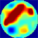

|  | TOAST Demo 3: Basic image reconstruction |
This demo shows a simple image reconstruction problem of simultaneous recovery of absorption and scattering distribution from boundary measurements in a circular domain. This example uses noise-free data generated on a high-resolution mesh. The initial parameters are the homogeneous background parameters of the medium.
You can select the reconstruction algorithm and the regularisation method.